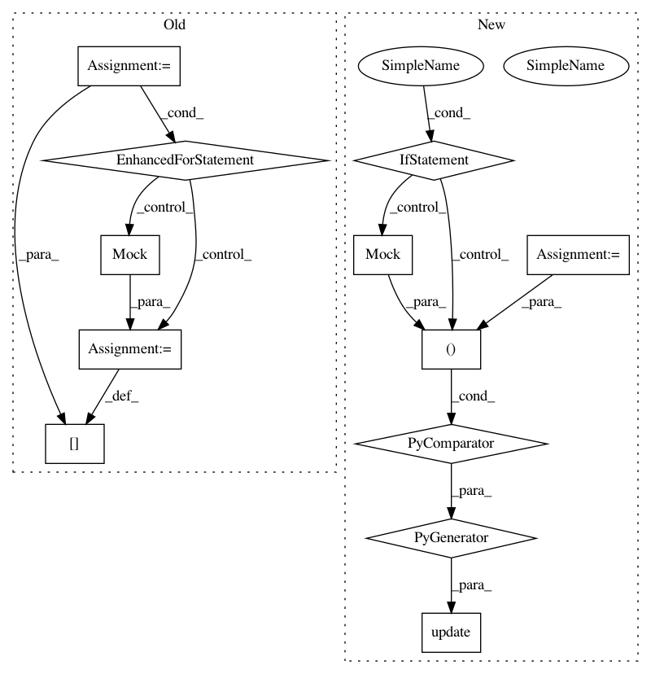

ba28d509fb6c873291a5279786fc304bfd089e1f,docs/conf.py,,,#,22
Before Change
"pysam", "intervaltree",
"Bio", "Bio.Seq", "Bio.Alphabet", "tables", "mpl_toolkits", "mpl_toolkits.mplot3d"]
for mod_name in MOCK_MODULES:
sys.modules[mod_name] = mock.Mock()
// If extensions (or modules to document with autodoc) are in another directory,
// add these directories to sys.path here. If the directory is relative to the
// documentation root, use os.path.abspath to make it absolute, like shown here.
//sys.path.insert(0, os.path.abspath("."))
// -- General configuration ------------------------------------------------
// If your documentation needs a minimal Sphinx version, state it here.
//needs_sphinx = "1.0"
// Add any Sphinx extension module names here, as strings. They can be
// extensions coming with Sphinx (named "sphinx.ext.*") or your custom
// ones.
extensions = [
"sphinx.ext.autodoc",
"sphinx.ext.doctest",
"sphinxarg.ext"
After Change
"matplotlib.colors", "matplotlib.cm", "mpl_toolkits", "mpl_toolkits.axisartist",
"pysam", "intervaltree",
"Bio", "Bio.Seq", "Bio.Alphabet", "tables", "mpl_toolkits", "mpl_toolkits.mplot3d"]
sys.modules.update((mod_name, Mock()) for mod_name in MOCK_MODULES)
//for mod_name in MOCK_MODULES:
// sys.modules[mod_name] = mock.Mock()
In pattern: SUPERPATTERN
Frequency: 3
Non-data size: 12
Instances
Project Name: deeptools/HiCExplorer
Commit Name: ba28d509fb6c873291a5279786fc304bfd089e1f
Time: 2017-02-28
Author: bhardwaj@ie-freiburg.mpg.de
File Name: docs/conf.py
Class Name:
Method Name:
Project Name: deeptools/HiCExplorer
Commit Name: aaa540021bad38c536cf704ef5ec7471b6e03e27
Time: 2017-02-28
Author: bhardwaj@ie-freiburg.mpg.de
File Name: docs/conf.py
Class Name:
Method Name:
Project Name: PIA-Group/BioSPPy
Commit Name: 11c1b43fb9696308683d7e995679cf78bb3c4aca
Time: 2015-09-03
Author: capcarr@github.fake
File Name: docs/conf.py
Class Name:
Method Name: